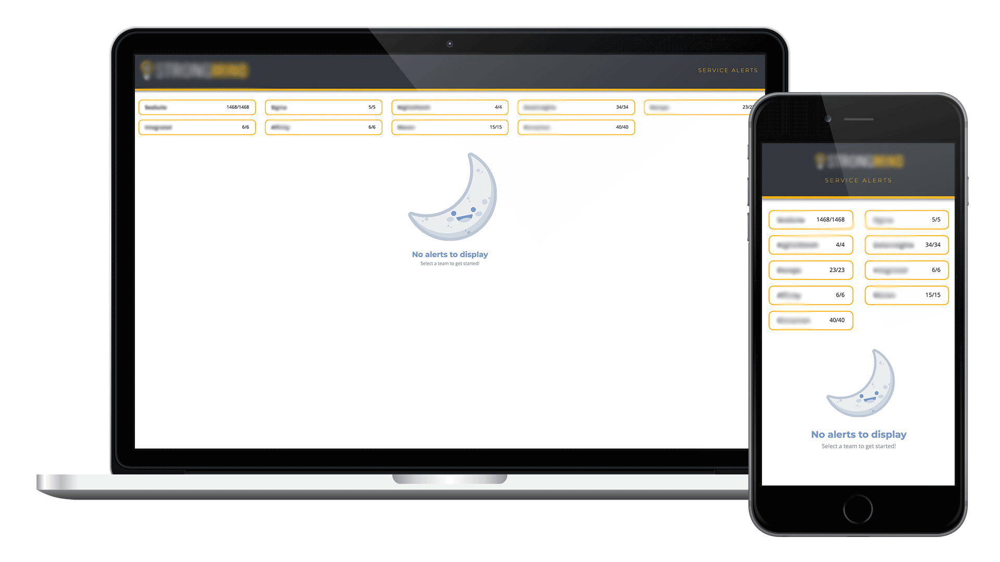

I like to create stuff.



About Me
A friend once described me as, "a jock who likes nerdy things." I trust his opinion.
I have a passion for learning new things (which quickly shows, if you ever get me talking about my hobbies). I like to create. I enjoy pet projects that span from digital design, to baking, to woodworking. I enjoy getting outdoors, playing sports, and physical activity in general; this is starkly juxtaposed with my other favorite pasttime, which is sitting around on a Saturday, shirking chores, and playing video games.
Thank you for taking the time to learn a bit about me and what I do!
Back to top